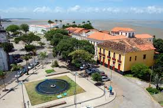

O Maranhão é um estado localizado na região Nordeste do Brasil, conhecido por sua rica cultura, belezas naturais e patrimônio histórico. Sua capital, São Luís, é famosa por seu centro histórico colonial, tombado como Patrimônio Mundial pela UNESCO. O estado destaca-se também pelos Lençóis Maranhenses, um parque nacional com dunas e lagoas de águas cristalinas. A culinária maranhense é rica e diversificada, com pratos típicos como arroz de cuxá, torta de camarão e peixe frito. Além disso, o Maranhão é palco de diversas manifestações culturais, como o Bumba Meu Boi e o Tambor de Crioula.
 Voltar